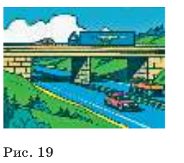
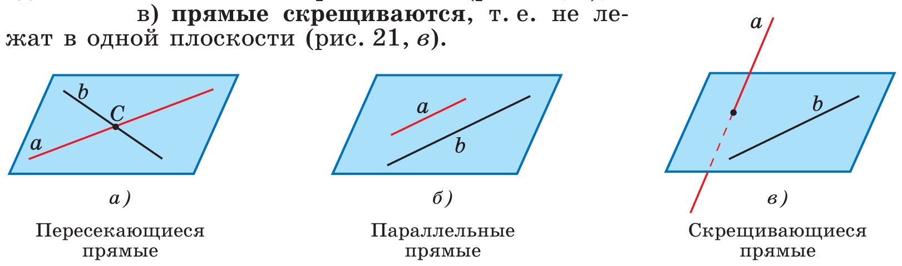
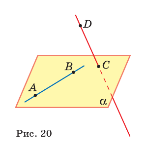
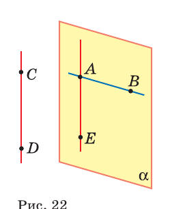
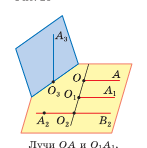
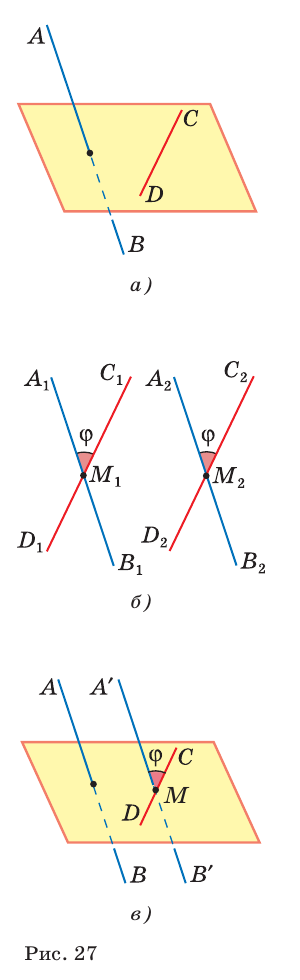

Третий случай расположения прямых и угол между ними
Дорога по эстакаде и дорога под ней.

| Прямые | Общие точки | В одной плоскости? |
|---|---|---|
| пересекаются | одна | да |
| параллельны | нет | да |
| скрещиваются | нет | нет |





| Прямые | Переносим | Угол |
|---|---|---|
| AB и B₁C₁ | B₁C₁ → BC | ? |
| AB и A₁C₁ | A₁C₁ → AC | ? |
| AD₁ и DC₁ | DC₁ → AB₁ | ? |
Подсказка к третьей строке: треугольник AB₁D₁ — какой?
И найти дома три пары скрещивающихся прямых